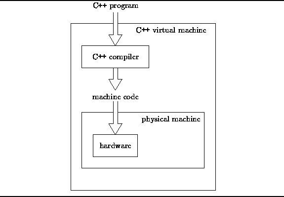

Data Structures and Algorithms
with Object-Oriented Design Patterns in C++
Data Structures and Algorithms
with Object-Oriented Design Patterns in C++
In this section we develop a detailed model
of the running time performance of C++ programs.
The model developed is independent of the underlying
hardware and system software.
Rather than analyze the performance of a particular,
arbitrarily chosen physical machine,
we consider the implementation of the C++ programming language
as a kind a ``virtual C++ machine'' (see Figure  ).
).
A direct consequence of this approach is that we lose some fidelity--the resulting model will not be able to accurately predict the performance of all possible hardware/software systems. On the other hand, we shall see that the resulting model is still rather complex and rich in detail.

Figure: Virtual C++ Machine
 Copyright © 1997 by Bruno R. Preiss, P.Eng. All rights reserved.
Copyright © 1997 by Bruno R. Preiss, P.Eng. All rights reserved.